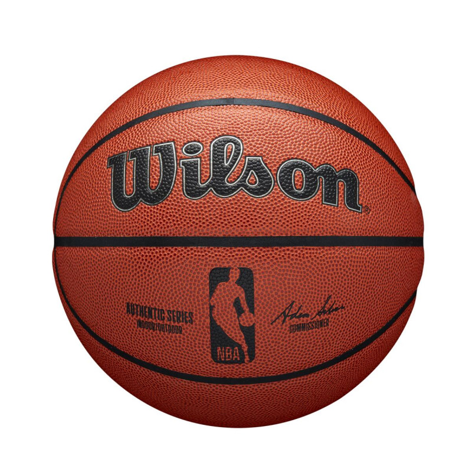
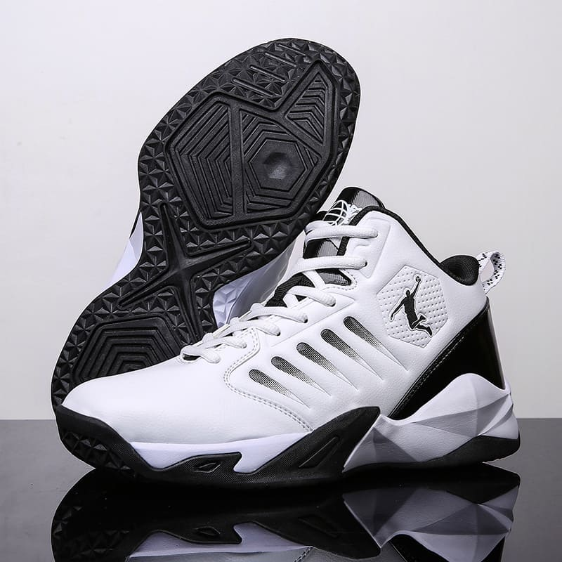
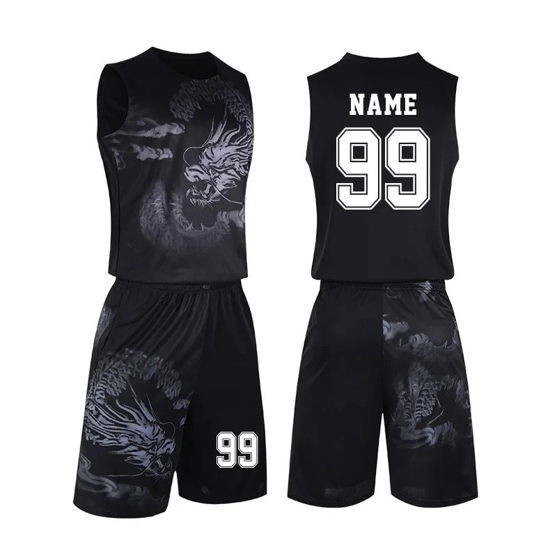
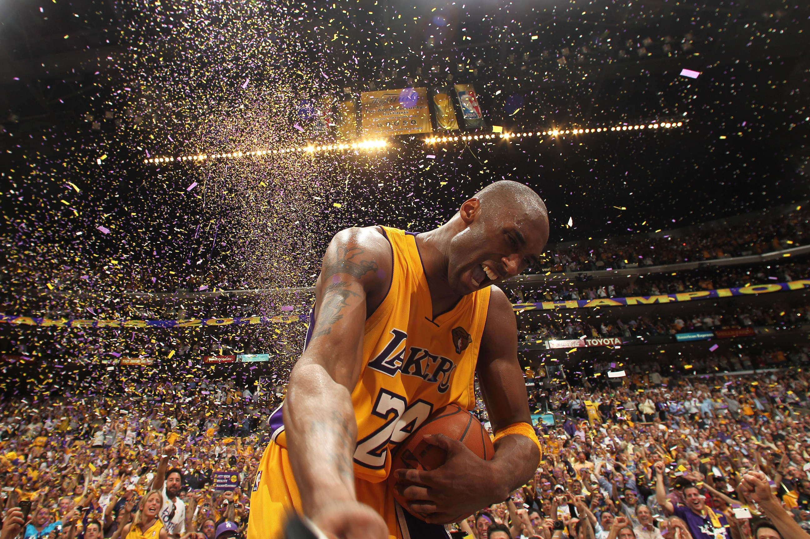

FIRE SWEAT
Bola de Basquete
Tênis de Basquete
Uniformede Basquete
História do Basquete
O basquetebol foi criado pelo professor de Educação Física canadense James Naismith (1861-1940), em 1891. Sua invenção foi desenvolvida quando ele publicou as 13 regras para jogar basquetebol, em 1892. O esporte surgiu como uma alternativa ao inverno rigoroso da região, diferentemente dos outros praticados ao ar livre como o basebol e o futebol americano.
Kobe Bean - Jogador de Basquete
Kobe Bean Bryant foi um jogador profissional de basquetebol estadunidense. Jogou toda sua carreira como ala-armador no Los Angeles Lakers da National Basketball Association.
Endereço da loja google maps.